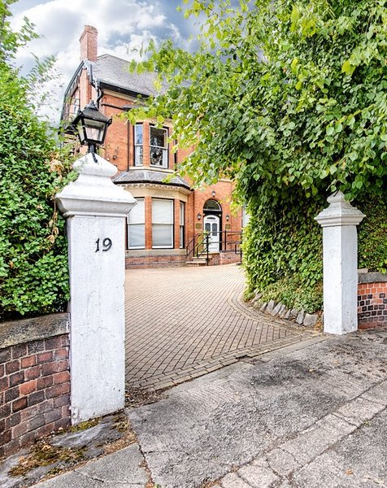

Facilities
A fully insured and certified facility, The Manchester Clinic is the perfect place to host your patients. Our friendly and professional staff provide patient care of the highest quality, and The Manchester Clinic is equipped throughout to ensure that your patients' experience is one of comfort, privacy and safety.

Clients of The Manchester Clinic enjoy many benefits, including:
- A comprehensively personal service tailored to the needs of you and your patients
- Full insurance cover for your appointments
- Full accreditation from the Care Quality Commision
- An elegant Victorian building located in pleasant and peaceful surroundings
- Bespoke Consulting Rooms
- Flexible evening and weekend rentals
- A conference room for meetings, CPD events and the like
- A service designed specially for the needs of private patients
- State of the art facilities in a traditional setting
- Free parking, with a charging facility for electric cars
- Opportunity to enjoy the pleasant and tranquil trees, wildlife and gardens that surround the building
- Exceptional privacy offered by our exclusive custom-built blinds
- Automated aseptic non-touch hand hygiene facilities
- Free high-speed wireless internet connectivity
- Friendly and professional staff to deal with your calls, welcome your patients, make your appointments, and take payments
- A personalised telephone system answered and managed to your specification
- Support services available such as secretarial administration, marketing and opportunities to develop your private practice through social events
- Full access for wheelchair users
In addition to the above, we can also optionally offer a chaperone and administrative services such as appointment services, invoicing of patient fees, faxing, email services and digital dictation services